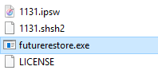

Downgrading your iDevice
Downgrading is a key part of Jailbreaking.
It allows you to go to one iOS version to another, regardless of wether or not Apple is signing that version. This can be used, for example, to go from iOS 10.2 to iOS 11.1.2, when 11.1.2 is no longer signed.
64-bit devices
Requirements:
Compared to 32-bit devices, 64 bit devices are very heavy on security. The most major way is within the SEP. This handles some security processes on the device, most notably touchID and FaceID. It runs its own OS, which is also signed by Apple. sepOS must be compatible with iOS for a successful restore process.
- SHSH Blobs
- Signed SEP
- Device Capable of setting nonce NOTE: (This can be done with NonceSet or V0rtexNonce, but this tutorial will demonstrate from the command line)
- IPSW for target iOS version
- Machine running Mac OS or Windows
Let's get started:
- Download the latest FutureRestore from Encounter's GitHub
- Put the .IPSW and .SHSH in the same folder as the FutureRestore executable. NOTE: For simplicity, name each file according to the iOS version you wish to go to (1131.ipsw & 1131.shsh2, if you were restoring to iOS 11.3.1) 
- Set your nonce. Do to this, open a command prompt or SSH session on your device, and enter the following command, substituting the text in brackets with its appropriate replacements:
nvram com.apple.System.boot-nonce=[generator] - With your device plugged into your computer, put your device into recovery mode, also from the command line:
nvram auto-boot=falseandreboot - On your computer, open Command Prompt (Windows) or Terminal (macOS) to the location in which FutureRestore is located
- inside your command shell, enter the following, substituting the text in brackets with their appropriate replacements:
On macOS:./futurerestore -t [SHSH2 blob File] --latest-sep --latest-baseband [IPSW File]
On Windows:futurerestore -t [SHSH2 blob File] --latest-sep --latest-baseband [IPSW File]
NOTE: The-tspecifies the apticket or "blob" filepath. The--latest-sepand--latest-basebandspecifies that FutureRestore should use the latest sepOS and baseband provided by Apple. If you are restoring a device without cellular capabilities, use--no-basebandinstead of--latest-baseband. - Allow FutureRestore to run uninterrupted. You will see a lot of verbose text and progress bars appear. The process will be completed when you see
DONE done: restoring suceeded.and FutureRestore quits. - At this point your phone should restart, and begin the setup process as if you had performed a regular restore.